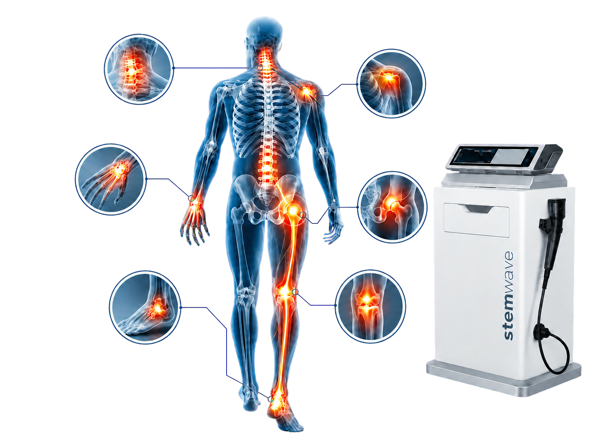
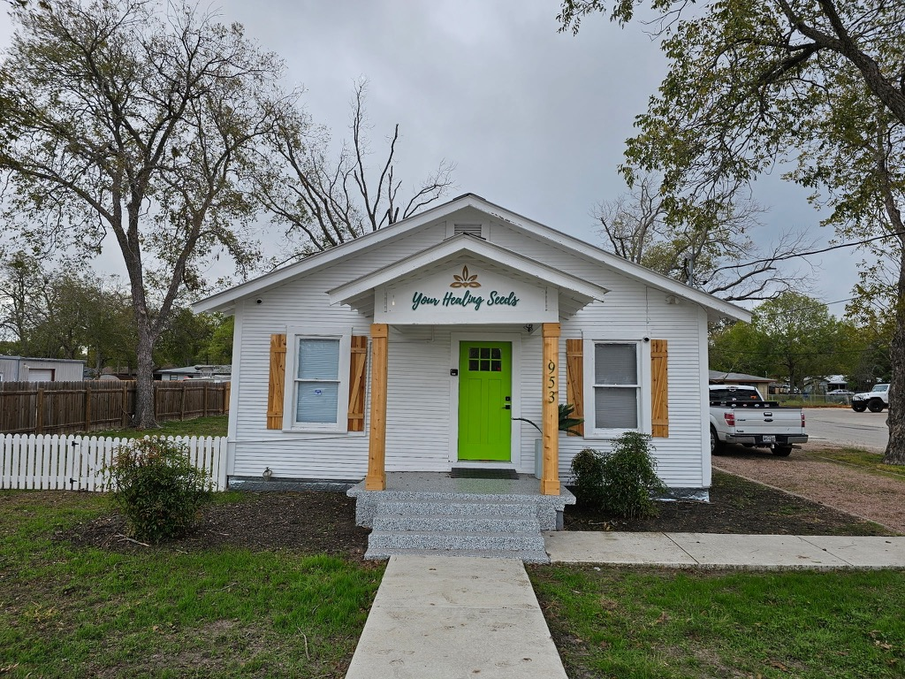

Knees
Stiffness & joint pain
Focused care.
Lasting relief.

About Stemwave
Relief built around you
Stemwave Pain Relief offers advanced Stemwave Therapy for chronic, nagging pain in areas such as the knees, neck, lower back, hands, elbows, feet, plantar fasciitis, and more.
Led by owner and licensed medical professional Mandy Wright, FNP, with Stemwave treatments provided by technician Joe Wright. This non-surgical, minimally invasive therapy is designed to support the body’s natural healing response and help clients move forward with less pain and more freedom.
Common treatment areas
Stemwave Therapy may help with everyday aches, stubborn injuries, and chronic discomfort throughout the body.
Stiffness & joint pain
Chronic discomfort
Tension & limited motion
Overuse & joint pain
Plantar fasciitis & more
Ask us about your area of concern
Focused treatment
Focused care for joints, soft tissue, and sciatic pain.
Common areas treated

Neck & spine Shoulder Wrist & hand Hip & sciatic Ankle & foot KneeWhat to expect
Utilizing Cellular Response Technology (CRT), Stemwave delivers focused electrohydraulic sound waves designed to stimulate the body’s biological healing response in muscles, joints, tendons, and other soft tissue—without surgery, injections, or medication.
We begin with your symptoms, concerns, and movement goals.
A focused scan helps locate sensitive and affected tissue.
Sessions typically take 5–15 minutes per treatment area.

Our trusted home
Stemwave Pain Relief is hosted at and verified by Your Healing Seeds, a trusted holistic health practice in Seguin, Texas, founded in 2020 and led by Mandy Wright, FNP, the licensed medical professional on the care team.
With a foundation in integrative, whole-person care, Your Healing Seeds provides a credible and compassionate setting where modern wellness technology meets natural healing principles.
A client story
A firsthand Facebook recommendation from a Stemwave Pain Relief client.
View reviews on FacebookJoe Wright did a Stemwave treatment on my neck and shoulders and I went from a pain level of 8–10 to a level 2–3! This was after one visit! This treatment has won me over. Thank you!
Let’s get you moving
Visit
Your Healing SeedsHours
Tuesday & Thursday
9:00 AM–5:00 PM
Connect